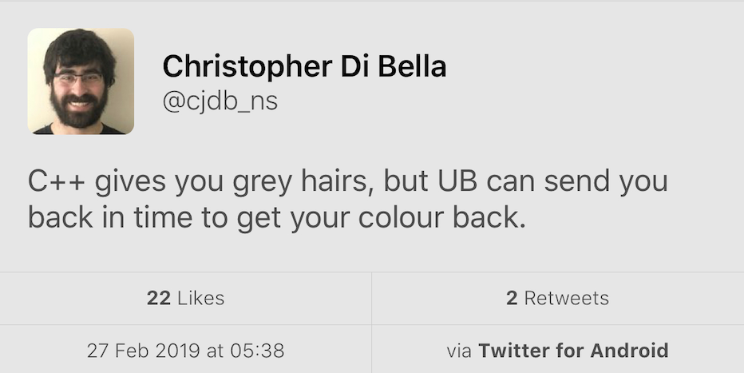

2019-03-07
await and yield as keyword without breaking any existing code.Colby Pike:
This is a follow-up to C++ Modules might be Dead-on-Arrival.
We can deduce the answer from Betteridge’s law of headlines: No.
First and foremost, let me get this out of the way: I do not want C++ modules to fail. I do not know of anyone who wishes for them to crash and burn. I do know people with serious concerns about modules. The purpose of these posts is not to shoot down the modules work, but to make our skeptical voices heard.
Gabriel Dos Reis:
A lot of harm has been done with incomplete understandings or misunderstandings presented as flaws in the modules design.
https://www.reddit.com/r/cpp/comments/axnwiz/cmake_gcc_module_proofofconcept/
Hi all, CMake developer here. There's been a lot of noise and discussion of modules recently, particularly with respect to how build systems will deal with it. There has been build2 for quite a while, but it was also designed with modules in mind.
At Kona last week, I worked with Nathan Sidwell who is working on GCC's module support to get a minimally viable proof-of-concept for CMake building modules.

https://cukic.co/2019/02/09/moving-iterators-in-cxx/
std::move_iteratoris an iterator adaptor which behaves exactly like the underlying iterator, except that dereferencing converts the value returned by the underlying iterator into an rvalue. (https://en.cppreference.com/w/cpp/iterator/move_iterator)
std::vector<fs::directory_entry> results;
auto dir_items = files_in_dir(...);
results.insert(results.end(), dir_items.cbegin(), dir_items.cend());Alternatively (see https://en.cppreference.com/w/cpp/algorithm/move):
James Renwick, Tom Spink, Björn Franke (University of Edinburgh)
In our novel C++ exception implementation we make use of a stack-allocated object that records the necessary run-time information for throwing an exception, such as the type and size of the exception object. This state is allocated in a single place and is passed between functions via an implicit function parameter injected into functions which support exceptions. The state is initialised by
throwexpressions, and is re-used to enable re-throwing.catchstatements use the state in order to determine whether they can handle the exception. After a call to a function which may throw exceptions, a run-time check is inserted to test whether the state containsan active exception.
https://wgml.pl/blog/formatting-user-defined-types-fmt.html
std::endlhttps://accu.org/index.php/journals/2619

